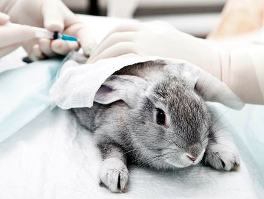

AMBIENTE

Los conejitos necesitan hacer ejercicio todos los dias. Se debe tener especial cuidado en ocultar o proteger
todo aquello que pueda roer y que sea peligroso, como los cables. Aunque lo mejor es que el conejito este
suelto todo el tiempo posible para evitar estres,aburrimiento y comportamiento destructivos.
ASEO

Los conejitos son muy exigentes cuando se trata de la higiene personal. Pasan una buena parte de su dia
acicalandose.Los baños son innecesarios para los conejos,sino que de hecho puede ser bastante traumatico.
SUS DIENTES

Estan en continuo crecimiento y por eso hay que proporcionarles todo lo que este a nuestro alcance para
que los desgasten. El HENO es fundamental en su dieta, ayuda al desgaste dental de manera natural,se
recomienda brindar cositas que pueda roer,como madera sin tratar,ramitas de arboles frutales,etc.
EPOCA DE MUDA

Los conejitos en temporada de muda dejan caer muchos pelos.El peligro esta en que al momento de lamerse
ingieren parte de su pelo que ingresa a su sistema digestivo y forma bolas de pelo que puede obstruirlo.
Es esencial que cepilles a tu conejo con regularidad para quitar el pelo suelto con un cepillo adecuado a su
pelaje.
ESTERILIZACION Y CASTRACION

Es recomendable para mejorar su calidad de vida. Ademas previene tumores futuros y cancer.
Esterilizar evita la reproduccion. La castracion disminuye o elimina conductas sexuales agresivas o
marcaje(como orinar las paredes) Esterilizar es parte de la tenencia responsable que tiene como dueño/a que
tiene usted con el conejito/a.